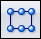

Construct a synchronous rectangular pattern feature
-
In PathFinder or the graphics window, select one or more features to pattern.
-
Choose Home tab→Pattern group→Rectangular

. -
Hover over a face and a dynamic pattern profile is displayed.
If you move the cursor off the face, the pattern profile is no longer displayed. You can lock to face by pressing F3 or by clicking the lock icon. When the plane locks, the pattern profile is always displayed.
Note:You can press the C key to center the pattern feature on the pattern profile. Press C again to return to the default corner placement.
-
Click to define the pattern profile position and a rectangular pattern is constructed.
-
Use the Rectangular Pattern command bar and the dynamic edit boxes in the graphics window to define the pattern parameters.
-
On the Rectangular Pattern command bar, right-click or click the Accept button to finish the feature.
-
You can pattern features, faces, and face sets.
-
You can drag the pattern occurrence handles to define the pattern parameters.
-
You can use the Suppress option on the Pattern command bar to suppress individual pattern occurrences.